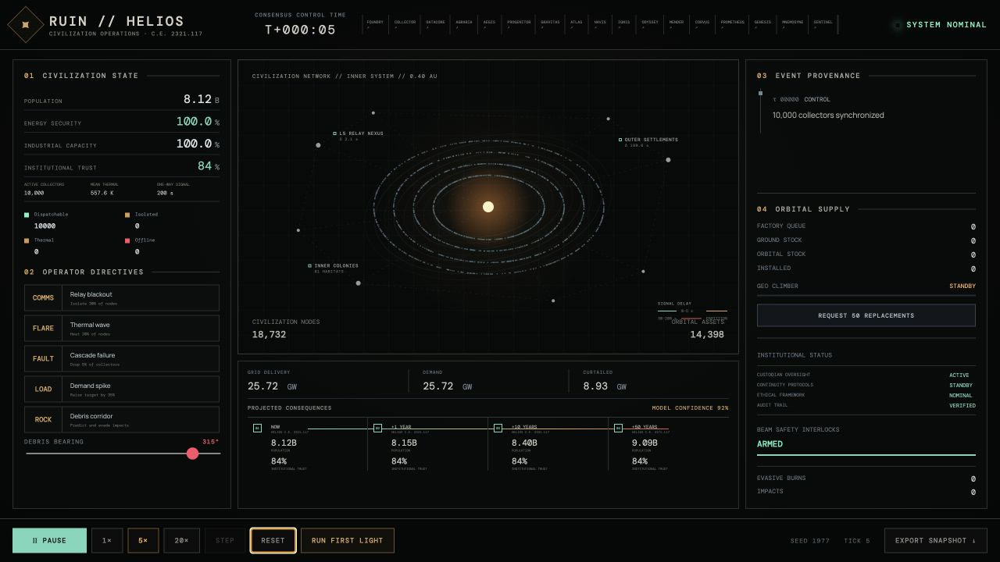

SCIENCE FICTION SYSTEMSLIVE SIMULATION

Executable science fiction · Distributed systems
RUIN // HELIOS
Mission control for a star-sized distributed system. A deterministic browser simulation lets an operator stress 10,000 autonomous solar collectors with communication loss, thermal limits, debris, demand spikes, and cascading failures.